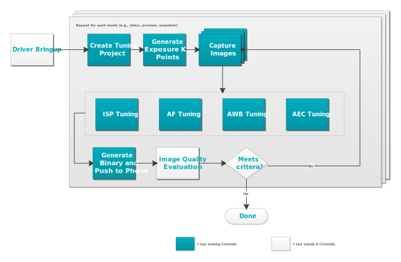

| Prerequisites / Introduction | |
The flow chart below illustrates the overall camera tuning process. The colored boxes represent tasks involving the Chromatix™ and show how they fit in the overall tuning process. Prerequisite tasks for ISP tuning begin after driver bringup is complete and ISP tuning itself occurs mostly in parallel with AF, AWB, and AEC tuning. Changes in these other areas may have an impact on ISP tuning, so maintain best practices in team communication and collaboration to minimize avoidable delays.

Although the process is illustrated as being relatively linear, camera tuning is an iterative process in which you repeat the entire process or sections of the process several times. After completing the initial tuning and saving your Chromatix project, subsequent iterations for the same project usually begin by opening the existing project and refining the parameters with additional basic or advanced tuning.
| Task | Description |
|---|---|
| Prerequisites | Perform tasks that are prerequisite to ISP tuning: create a new project, load the settings on the device, and capture images with the device. |
| Initial tuning | Perform ISP tuning in multiple iterations. Evaluate the results of tuning at any time using the simulation feature. |
| Simulate the tuning | Use the simulation feature at any time during the tuning process to see how a specific set of parameters for a specific series of tuning modules affect the raw image. Use the simulator to check the image results as it passes through each tuning module to identify where a specific issue is introduced. |
| Image quality evaluation | After each tuning session, capture new test images with the tuned device and objectively (numerically) measure image quality. |
| Load tuned settings | At this stage of the process, generate binary files that contain tuned parameters and load the settings on the device. |